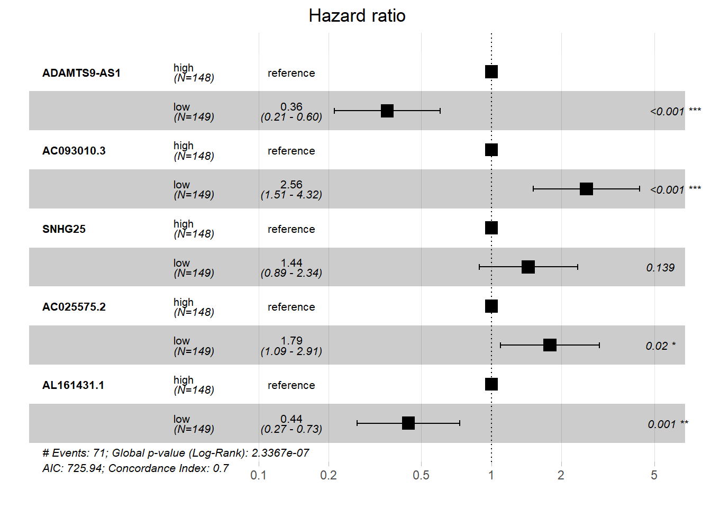
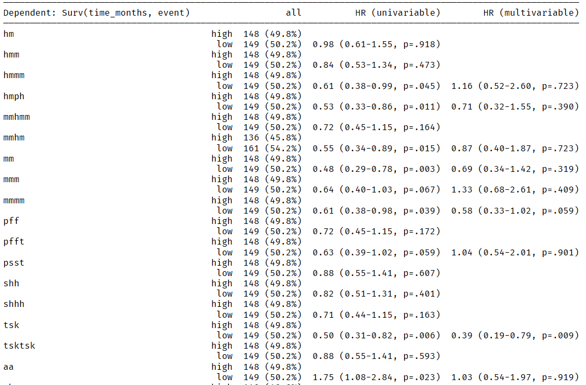

rm(list = ls())
load(file = "datasets/lnc_expr_clin.RData")
#去掉没有生存信息的样本
lnc_expr_clin1 <- lnc_expr_clin[!is.na(lnc_expr_clin$time_months),]
lnc_expr_clin1 <- lnc_expr_clin1[lnc_expr_clin1$time_months>0,]
#选择其中一部分数据
dat.cox <- lnc_expr_clin1[,c(72:73,1:59)]
dim(dat.cox)
## [1] 297 61
dat.cox[1:4,1:6]
## event time_months PGM5-AS1 LINC01082 AC005180.2 AC005180.1
## 1 0 36.33 0.15064007 0.2642238 0.0000000 0.1547768
## 2 0 13.87 0.06309362 0.1666554 0.3105983 0.2436603
## 3 1 21.83 2.16399508 3.5662920 2.2454129 2.0073496
## 4 0 18.20 2.73075081 1.7314314 0.8609916 0.732301411 变量筛选之先单后多
先进行单因素分析，有意义的变量继续进行多因素分析，这个可能是大家最先接触到的变量筛选方法，但是这种思路对吗？要不要使用这种方法？
强烈建议大家先阅读冯国双老师的4篇文章，除了能解决以上两个问题外，还解释了为什么单因素有意义多因素却没有意义/单因素无意义多因素有意义的问题：
读完之后看实操~
11.1 准备数据
我们使用TCGA-BLCA的lncRNA数据，其中包括408个样本，time_months是生存时间，event是生存状态，1代表死亡，0代表生存，其余变量都是自变量。
先简单处理一下数据（数据已放在粉丝QQ群文件）：
现在这个数据一共59个自变量，我们先对每一个自变量都做一遍单因素COX回归，但是要注意，这里的59个自变量都是连续型的，通常基因表达量增加1，死亡风险增加xx倍这种情况是不可能发生的，这样的结果解释也是不合理的，所以我们需要先把这样的变量重新分箱，比如根据中位数分成两组，再进行单因素COX回归。
dat_cox <- dat.cox
dat_cox[,c(3:ncol(dat_cox))] <- sapply(dat_cox[,c(3:ncol(dat_cox))],function(x){
ifelse(x>median(x),"high","low")
})
dat_cox[,c(3:ncol(dat_cox))] <- lapply(dat_cox[,c(3:ncol(dat_cox))],factor)
dat_cox[1:4,1:6]
## event time_months PGM5-AS1 LINC01082 AC005180.2 AC005180.1
## 1 0 36.33 high low low low
## 2 0 13.87 low low high high
## 3 1 21.83 high high high high
## 4 0 18.20 high high high high11.2 批量单因素cox
然后就可以对每个变量进行单因素COX分析了：
library(survival)
gene <- colnames(dat_cox)[-c(1:2)]
cox.result <- list()
for (i in 1:length(gene)) {
#print(i)
group <- dat_cox[, i + 2]
if (length(table(group)) == 1) next
#if (length(grep("high", group)) < min_sample_size) next
#if (length(grep("low", group)) < min_sample_size) next
x <- survival::coxph(survival::Surv(time_months, event) ~ group,
data = dat_cox)
tmp1 <- broom::tidy(x, exponentiate = T, conf.int = T)
cox.result[[i]] <- c(gene[i], tmp1)
}
res.cox <- data.frame(do.call(rbind, cox.result))筛选出P值小于0.1的变量：
library(dplyr)
unifea <- res.cox %>%
filter(p.value<0.1) %>%
pull(V1) %>%
unlist()
unifea
## [1] "AC005180.2" "AC005180.1" "AC053503.3" "MIR100HG" "AP001107.5"
## [6] "C5orf66-AS1" "AL162424.1" "ADAMTS9-AS1" "MIR200CHG" "AC093010.3"
## [11] "AC079313.2" "SNHG25" "AL049555.1" "MIR1-1HG-AS1" "SPINT1-AS1"
## [16] "KRT7-AS" "HAND2-AS1" "AC025575.2" "MAFG-DT" "AL390719.2"
## [21] "AC002398.2" "AL161431.1" "U62317.1" "AL023284.4" "AATBC"11.3 多因素cox
把这些变量进行多因素COX回归
sub_dat <- dat_cox[,c("time_months","event",unifea)]
dim(sub_dat)
## [1] 297 27
sub_dat[1:4,1:6]
## time_months event AC005180.2 AC005180.1 AC053503.3 MIR100HG
## 1 36.33 0 low low low low
## 2 13.87 0 high high high low
## 3 21.83 1 high high high high
## 4 18.20 0 high high high high拟合多因素cox回归模型并查看结果：
final.fit <- coxph(Surv(time_months,event)~., data = sub_dat)
res <- broom::tidy(final.fit)
res
## # A tibble: 25 × 5
## term estimate std.error statistic p.value
## <chr> <dbl> <dbl> <dbl> <dbl>
## 1 AC005180.2low 0.146 0.413 0.354 0.723
## 2 AC005180.1low -0.343 0.399 -0.859 0.390
## 3 AC053503.3low -0.139 0.391 -0.355 0.723
## 4 MIR100HGlow -0.365 0.366 -0.997 0.319
## 5 AP001107.5low 0.284 0.344 0.825 0.409
## 6 `C5orf66-AS1`low -0.538 0.284 -1.89 0.0587
## 7 AL162424.1low 0.0418 0.335 0.125 0.901
## 8 `ADAMTS9-AS1`low -0.947 0.360 -2.63 0.00853
## 9 MIR200CHGlow 0.0336 0.329 0.102 0.919
## 10 AC093010.3low 0.905 0.323 2.80 0.00505
## # ℹ 15 more rows查看P值小于0.05的变量：结果只有5个
res %>% filter(p.value<0.05)
## # A tibble: 5 × 5
## term estimate std.error statistic p.value
## <chr> <dbl> <dbl> <dbl> <dbl>
## 1 `ADAMTS9-AS1`low -0.947 0.360 -2.63 0.00853
## 2 AC093010.3low 0.905 0.323 2.80 0.00505
## 3 SNHG25low 0.592 0.280 2.11 0.0346
## 4 AC025575.2low 0.618 0.287 2.16 0.0311
## 5 AL161431.1low -0.704 0.309 -2.28 0.0226这5个变量可以用于最终的模型中，但是考虑到不同变量之间的交互作用等情况，此时再拟合多因素cox模型，可能还会出现某个变量的P值大于0.05的情况，属于正常现象~
fit5 <- coxph(Surv(time_months,event)~`ADAMTS9-AS1`+AC093010.3+SNHG25+
AC025575.2+AL161431.1,data = sub_dat)
library(survminer)
## Loading required package: ggplot2
## Loading required package: ggpubr
##
## Attaching package: 'survminer'
## The following object is masked from 'package:survival':
##
## myeloma
survminer::ggforest(fit5)
## Warning in .get_data(model, data = data): The `data` argument is not provided.
## Data will be extracted from model fit.
11.4 1行代码实现
手动实现的过程就是为了告诉大家思路是怎样的，这样大家有一定的基础就可以自己做，不管是什么数据，都是一样的思路，用什么方法和工具不重要，思路才是最重要的。
下面再给大家介绍一个R包，可以实现1行代码完成先单后多cox分析，得到的结果和我们的手动实现的结果是一样的。
首先安装R包：
#install.packages("devtools")
devtools::install_github("cardiomoon/autoReg")library(autoReg)使用autoReg函数可以实现先单后多cox分析，首先先建立cox模型，此时是多因素cox的形式，但是这个函数会自动帮我们提取数据，然后先批量对每个变量做cox。
但是！乱七八糟的变量名字是不行的，比如我们演示用的这个lncRNA数据集，变量名字中有-，导致函数报错：
fit <- coxph(Surv(time_months,event)~., data = dat_cox)
autoReg(fit,
threshold = 0.1,
uni = T,
multi = F
)
# 报错
Error in parse(text = eq) : <text>:1:23: unexpected symbol
1: df[['MIR1-1HG-AS1']]+1HG
^我们给这个数据集的变量名字修改一下即可，我这里直接把-去掉了：
colnames(dat_cox)<- gsub("-","",colnames(dat_cox))
dat_cox[1:4,1:6]
## event time_months PGM5AS1 LINC01082 AC005180.2 AC005180.1
## 1 0 36.33 high low low low
## 2 0 13.87 low low high high
## 3 1 21.83 high high high high
## 4 0 18.20 high high high high这样变量名字中就没有乱七八糟的符号了，此时再进行分析就不会报错了。
而且结果直接给出了三线表的格式，看起来非常整洁：
fit <- coxph(Surv(time_months,event)~., data = dat_cox)
ft <- autoReg(fit,
threshold = 0.1,
uni = T, # 单因素分析
multi = T, # 多因素分析
final = F # 逐步法，向后
)
ft表格太长了，只展示部分：

这个结果是可以导出为Word或者Excel格式的：
library(rrtable)
table2docx(ft)除此之外，这个包还是一个非常强大的三线表绘制R包，可以1行代码实现多种精美的三线表、回归分析（线性回归、逻辑回归、生存分析）结果表格，大家感兴趣的可以去官网学习：https://cardiomoon.github.io/autoReg/index.html